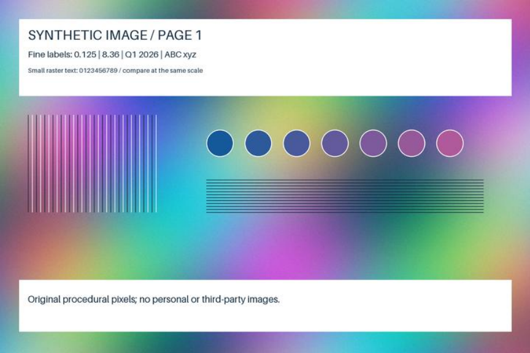
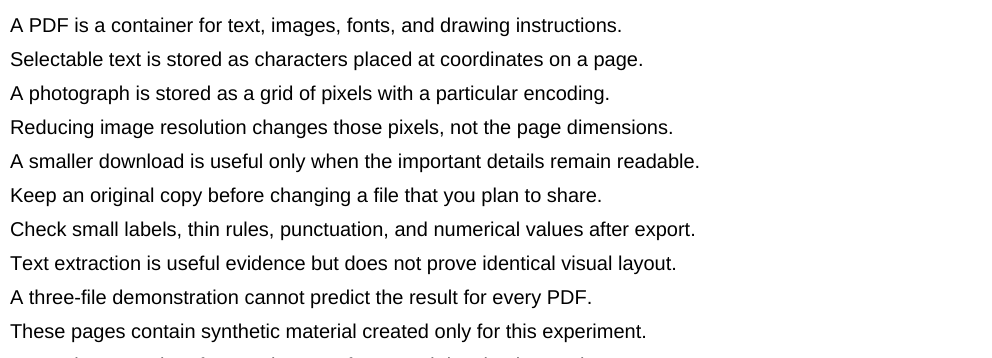

Why Some PDFs Shrink Dramatically—and Others Barely Change
Three PDFs. Three pages each. One compression pipeline. The image files became much smaller, but the tiny text file had only a few hundred bytes to give up.
The measured result: selectable text fell from 4,532 to 3,896 bytes (14.03%, just 636 bytes). Images fell from 14.210 MB to 0.117 MB (99.18%); text plus images fell from 14.212 MB to 0.119 MB (99.16%).
Those large savings came with softer raster labels and lost fine texture. These deliberately lossless, high-resolution synthetic images had unusually large room for reduction. This is an illustration of the mechanism, not an expected saving for your files.
What is actually taking up the space?
A PDF can store selectable characters, drawing instructions, fonts, and embedded pixel images. Two documents with the same page count can therefore start at very different sizes. A compressor that mostly changes images has little to work on in a compact text document.
This experiment asks what happens when the same image-focused settings are applied to three known inputs. It does not compare compression services or attempt to find the best PDF tool.
Three controlled inputs, one local pipeline
Each original is a three-page US Letter PDF (612 × 792 points), generated with ReportLab 4.4.9 with page-stream compression already enabled. All content was created for this experiment; no personal documents, stock photographs, or copyrighted third-party images were used.
- Selectable text: Helvetica headings, original explanatory sentences, repeated body text, and a 7-point copy-check footer. No embedded raster images.
- High-resolution images: one original procedural raster per page, containing gradients, seeded noise, fine rules, colored circles, and small raster labels. Each image is 1,800 × 1,200 pixels, stored losslessly and placed at 432 × 288 points: 300 dpi. It has no selectable text layer.
- Text + images: selectable headings, body text and footer plus exactly the same three images at the same physical size and position.
The local tool is the included Python pipeline: pypdf 6.10.0 + Pillow 12.3.0, run with Python 3.12.15 and NumPy 2.3.5. For every image it resizes to 720 × 480 pixels (120 dpi) with LANCZOS, then writes JPEG at quality 75, chroma subsampling 2 (4:2:0), without progressive or optimized encoding. It compresses page streams with deflate level 9 and merges identical objects/removes unreferenced ones. Page count, page size, image placement, and text operators are retained. The text-only file goes through the same pipeline but has no images to resize.
This is lossy image compression, not a promise of unchanged image quality. There is one fixed setting, no repeated tuning, and no claim that 120 dpi suits every use.
Exact procedure and reusable files
Install the pinned Python dependencies in requirements.txt and install Poppler separately. Run python experiment.py, followed by python build_report.py. The script generates originals, compresses them, measures on-disk bytes, checks every page’s extracted text, renders every page with Poppler 24.02.0 at 144 dpi, and crops page 1 at identical coordinates.
python -m pip install -r requirements.txt python experiment.py python build_report.py
Seed: 20261017 + page number, with NumPy default_rng. Exact software versions and SHA-256 hashes for all six PDFs are in results.json. Different library or renderer versions can change bytes and pixels. The stored files are the evidence for this run.
The actual file sizes
Saving = (original bytes − compressed bytes) ÷ original bytes × 100. Values below come from the six files on disk; percentages are rounded to two decimals. kB and MB in this report are decimal units.
| Content | Pages | Original bytes | After bytes | Saving | Text check |
|---|---|---|---|---|---|
| Selectable text | 3 | 4,532 | 3,896 | 14.03% | Identical extracted text on all 3 pages |
| High-resolution images | 3 | 14,209,765 | 116,907 | 99.18% | No text layer in either file |
| Text + images | 3 | 14,212,097 | 118,802 | 99.16% | Identical extracted text on all 3 pages |
On a narrow screen, scroll the chart horizontally. The upper panel uses kB; the lower panel uses MB. Each scale is linear and starts at zero. The separate scales make the tiny text file visible without implying that it was comparable in size to the image files.
Smaller files, softer image detail
These are real crops from the original and compressed PDFs, rendered at the same 144 dpi with the same coordinates. Each pair has equal pixel dimensions and equal display width. Open a crop to inspect its actual pixels; a narrow screen can hide differences.
High-resolution images



Text + images


Selectable text



Visual observations: all 18 rendered pages retained their expected layout and content. The image crops show smoother backgrounds, softened small raster lettering, and less distinct thin lines after compression. The larger labels and colored shapes remain recognizable. In the text-only pages and the selectable text of the mixed file, no visible layout or character changes were observed at the inspected render scale.
Every text-containing page returned identical extracted text before and after: 7,044 characters across the text PDF and 2,634 across the mixed PDF. Their text layer remains available for selection and copying; the script does not rasterize it. The image-only PDF has zero extracted characters both before and after, so this is not evidence of OCR. Extraction equality alone cannot prove that every PDF viewer will render or copy identically.
Inspect the contact sheet of every page. The source and compressed PDFs below let you check text selection and zoom in with your own reader.

- Text: original / compressed
- Images: original / compressed
- Mixed: original / compressed
Why the gap is so large here
The text PDF was small to begin with and already used compressed content streams. Rewriting and object cleanup saved 636 bytes. That is a real reduction, but it would rarely solve an attachment limit problem.
The two image documents started with losslessly stored, noisy 300-dpi rasters. The pipeline kept only 16% of the pixel count, then applied JPEG, which discards further detail. Their nearly identical savings make sense: they contain the same image payload, while the additional selectable text costs comparatively little.
The 99% figures are strongly dependent on that starting point. An already compressed JPEG scan, a monochrome fax, a document with large embedded fonts, or a signed form could behave differently. This run has no already-JPEG control, no monochrome or font-heavy document, and no signed or tagged PDF. It does not isolate resizing from JPEG encoding, assess accessibility preservation, test printing, or establish a general optimum. Some other inputs or pipelines can produce no saving or a larger output; none of these three did.
Choose a level, then check what matters
- Keep the original. Work on a copy and confirm that an upload limit is the problem you need to solve.
- Look inside the file. Try selecting body text. Zoom in on scans and diagrams. A page full of pixels responds differently from selectable text.
- Start with moderate settings. If images are responsible for the size, try a smaller resolution or JPEG quality on a copy. There is no reason to apply this experiment’s 120-dpi setting to every document.
- Inspect the output. Check every page, small numbers, punctuation, fine lines, and image labels at useful zoom. Copy a sentence and compare it with the original. Confirm page count and file size.
- Choose based on the task. If tiny labels become hard to read, increase resolution or quality even if the file becomes larger. Keep files with signatures, forms, or accessibility requirements out of an unvalidated rewrite workflow.
For implementation, you can use the local script here or choose a compression interface that exposes the controls you need. Readers who prefer an Arabic walkthrough of online options can consult Idraaak’s guide to تصغير حجم ملف PDF. That Arabic article is published by the same publisher as this report; it is a practical companion, not the source of these measurements. We did not test or rank the services it mentions.
For private documents, a local workflow avoids sending the document to an online compressor. This experiment uses only synthetic files, and its code makes no network requests.
Technical references
- pypdf: reducing file size — image replacement, object cleanup, and content-stream compression. The installed version for this run is pinned above.
- Pillow: JPEG settings — quality and chroma subsampling controls.
- Experiment repository — original code, PDF inputs and outputs, raw results, hashes, and actual rendered crops.